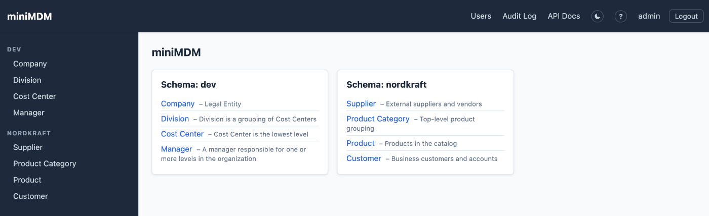
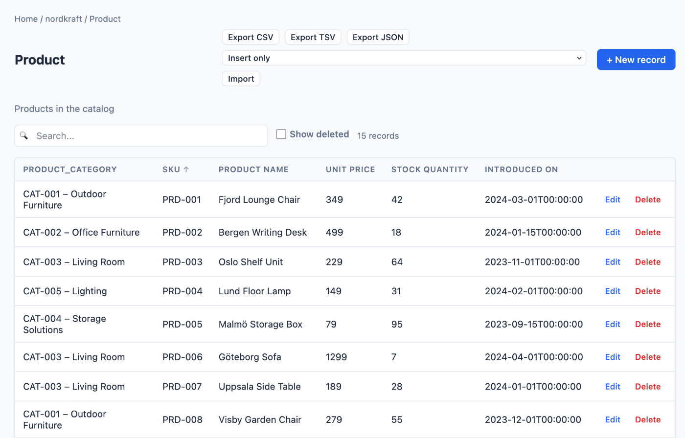
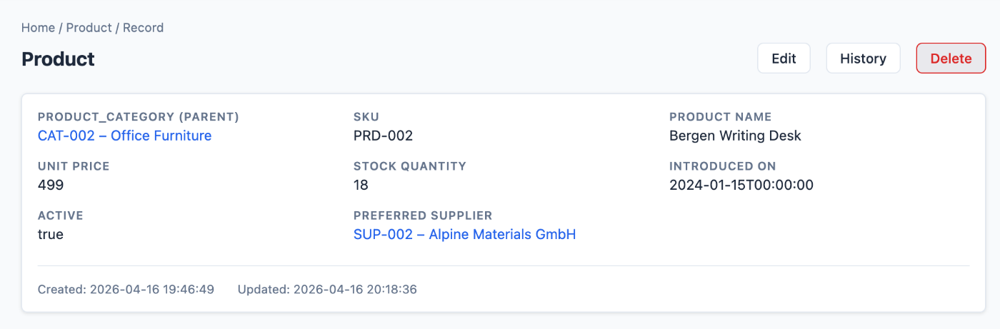
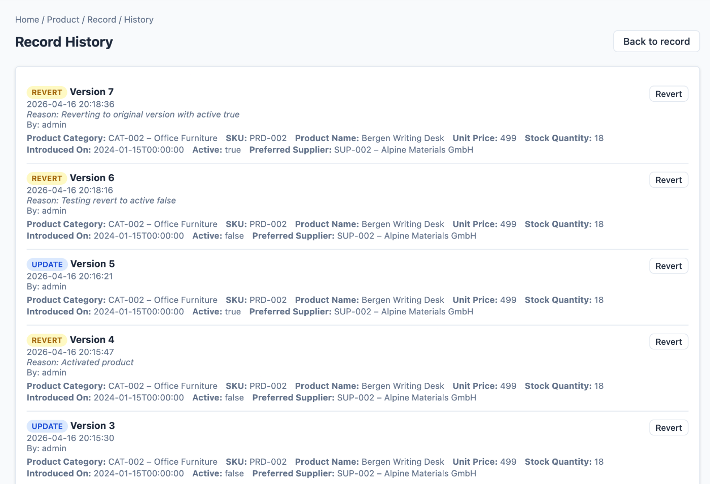
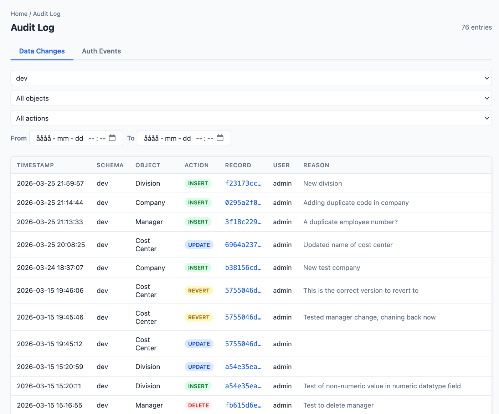

Schema as code
Define every data object — fields, types, references, required flags — in a single YAML or JSON config file. Version it in Git alongside the rest of your infrastructure.
miniMDM is a minimal, self-hosted application for curating the records your business runs on — customers, products, locations, anything. Define your schema in YAML, edit through a clean web UI or REST API, and get versioning, audit trails and access control out of the box.

miniMDM ships the primitives that serious master-data work actually requires. No vendor upgrades, no per-seat licensing, no modules to buy separately.
Define every data object — fields, types, references, required flags — in a single YAML or JSON config file. Version it in Git alongside the rest of your infrastructure.
Every edit writes a new version. Browse the complete history of any record, diff what changed, and revert to any prior state — no backup tape required.
What changed, who changed it, when, and why — searchable and filterable.
JWT auth with admin/user roles and per-schema read & write grants.
CSV, TSV and JSON round-trips, with optional upsert-by-key.
Search within any object. Sortable columns and sorted dropdowns keep forms usable.
Cross-object references and parent-child relations, surfaced inline on the detail view.
Every object gets a documented endpoint and OpenAPI spec — automatically.
No marketing mock-ups — these are the real screens, captured from the live app.

01 Records list — sortable columns, full-text search and bulk actions on every object.

02 Detail view — fields grouped into sections with child records and back-references inline.

03 Version history — every edit stored forever, any version revertable in one click.

04 Audit log — a filterable trail of every action across every schema and user.
If your reference data has outgrown a spreadsheet but doesn't need a multi-year rollout, you're exactly who miniMDM is for.
| Shared spreadsheet | miniMDM | Enterprise MDM suite | |
|---|---|---|---|
| Time to first record | Minutes | Minutes | Weeks to months |
| Record-level versioning | — | ✓ | ✓ |
| Full audit log (who / what / why) | — | ✓ | ✓ |
| Role & schema-level access control | Sheet-level | ✓ | ✓ |
| REST API + OpenAPI spec | — | ✓ | ✓ |
| Schema defined as code (Git-tracked) | — | ✓ | Usually UI-only |
| Self-hosted, no vendor lock-in | ✓ | ✓ | — |
| Cost | $0 (with caveats) | Free & MIT licensed | $$$ per seat, per year |
miniMDM is MIT licensed and lives entirely on your own infrastructure. Clone the repo, run it with Docker, read every line of the source.
Built on FastAPI, SQLAlchemy and PostgreSQL. Every change is tracked through Alembic migrations; every request gets a correlated log line. Deploy it on your laptop, a homelab VM, or behind your company's reverse proxy.